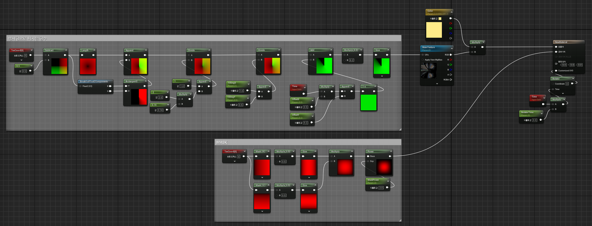
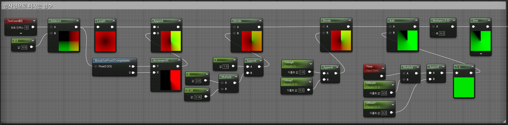
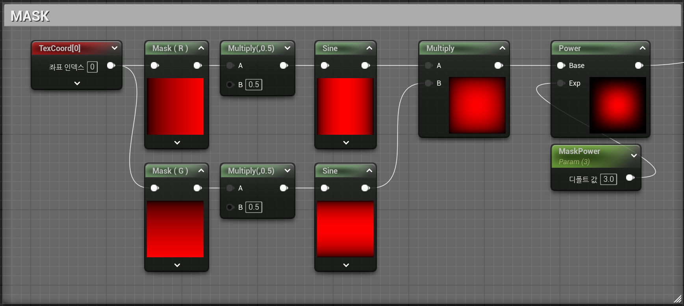

노드 구현 포인트
텍스처 이미지 기반에 따른 방사형
속도 조절 가능

노드 풀이
STEP 1
원래 UV 좌표 → (0,0) ~ (1,1)중심 기준 좌표 → (-0.5, -0.5) ~ (0.5, 0.5)
TexCoord에서 (0.5, 0.5)를 빼주면 중심을 구할수 있습니다.
STEP 2
각도를 알아야 원형 패턴을 만들 수 있기 때문에
Arctangents2 노드를 사용하여 원형 패턴을 만들어 줍니다.
구해진 원형 패턴 및 흐르는 시간을 을 X와 Y축으로 나누어 제어 하고 싶기 때문에 Divide노드를 사용하여
구현 해 줍니다.
STEP 3
이후 TIme 노드를 사용하여 속도의 제어를 할수있게 만들어 줍니다.
이때 Sine 노드는 그래프에서의 값의 주기적은 파형이 반복되게 같이 연결하여 주었습니다.
또한 같이 사용해 주면 좀더 자연스러운 속도감(Fade In/Out)을 생기게 할수 있습니다.

자주 사용하게 되는 노드 설명
Length : 원점의 거리 계산
Arctangents : 주어진 값의 각도를 계산하는 사용 (방사형 이펙트, UV 변형, 회전 효과 등을 만들 때 필수적인 연산 Node입니다.)
Sine : 값이 계속 주기적으로 반복되므로 파형 효과에 많이 사용
마스크
Texture 활용을 최대한 적게 사용하고자 마스크 또한 UV로 제작하여 자연스럽게 그라데이션을 주었습니다.

Mask : 특정 색상 채널(R, G, B, A)만 선택할 때 사용
Power : 0~1의 강도를 조절하여 이미지의 여백을 조절해줄수 있습니다.